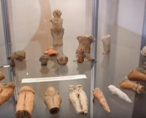
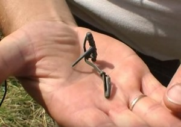
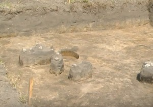
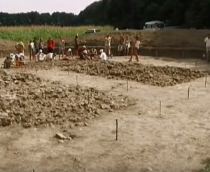

Вступ
Чернівці – місто з багатою історією, яке протягом віків було центром перетину культур, цивілізацій і торгових шляхів. Сучасне місто виникло на землях із глибокою історією, коріння якої сягають ще доісторичних часів. Це місце неодноразово змінювало своїх володарів, переживало періоди розквіту та занепаду, залишаючи за собою сліди різних культур. Археологічні дослідження свідчать, що територія Чернівців була заселена з давніх часів і відігравала важливу роль у розвитку регіону Буковини.
Розвиток поселень у доісторичний період
Перші сліди людської діяльності на території сучасних Чернівців відносяться до кам’яної доби. Археологи знаходять сліди стоянок мисливців, які мешкали тут приблизно 40-30 тисяч років тому. Основним заняттям людей того часу було полювання на великих тварин – мамонтів та бізонів. Перехід до неоліту (6–4 тисячоліття до н.е.) ознаменувався змінами в способі життя. Люди почали займатися землеробством і тваринництвом, створюючи постійні поселення.
Трипільська культура на Буковині
У період 5–3 тисячоліття до н.е. територія сучасних Чернівців була частиною зони поширення трипільської культури – однієї з найрозвиненіших культур доби енеоліту. Ця культура відзначалася високим рівнем розвитку гончарного мистецтва. Розкопки на околицях Чернівців виявили залишки кераміки з типовими трипільськими орнаментами, а також залишки глинобитних будівель. Трипільці будували великі поселення, де мешкало кілька сотень людей, займалися обробкою землі та виготовленням текстилю, їхня культура мала вплив на подальший розвиток інших спільнот регіону.
Скіфи та сармати
У 7–3 століттях до н.е. територію Буковини заселяли кочові племена скіфів, а згодом – сарматів. Скіфи залишили по собі численні кургани – поховальні пам'ятки, які свідчать про їхній спосіб життя та вірування. В околицях Чернівців знайдено предмети побуту та зброю, що належали скіфам. Скіфське населення не тільки займалося скотарством, але й активно торгувало з сусідніми племенами та грецькими колоніями на узбережжі Чорного моря. Згодом регіон перейшов під вплив сарматів, які принесли свої культурні елементи та військові традиції.
Перші слов’янські поселення
Починаючи з 3–4 століть н.е., на території Буковини почали з'являтися слов'янські племена. Вони оселялися вздовж річок, що забезпечувало їхні потреби у воді та захисті. Основними заняттями ранніх слов'ян було землеробство, скотарство та рибальство. У цей період також розвивалися релігійні вірування, пов’язані з природними силами та культом предків. Ранньослов’янські поселення заклали основу для подальшого розвитку місцевої культури.
Чернівці в складі Київської Русі
У 9–10 століттях територія Буковини увійшла до зони впливу Київської Русі. Хоча Чернівці як місто ще не існували в сучасному вигляді, в регіоні розвивалися торгові шляхи, які поєднували Київ із Західною Європою та Балканами. Місцеві племена брали участь у торгівлі та культурному обміні. Історичні джерела свідчать про наявність невеликих укріплень і торгових поселень, які виконували роль важливих вузлів на маршрутах між різними регіонами.
Галицько-Волинське князівство та його вплив
У 12–13 століттях територія Буковини стала частиною Галицько-Волинського князівства. В цей час відбулося укріплення місцевих поселень, що сприяло їхньому економічному та культурному розвитку. Історичні джерела згадують про існування укріплень на місці сучасних Чернівців. Торгівля розвивалася завдяки близькості до основних шляхів, які з’єднували південь і захід Європи.
Монгольська навала та її наслідки
У 1240-х роках регіон постраждав від навали монгольських військ. Багато поселень було зруйновано, а населення зменшилося. Однак після відступу монголів Буковина почала відновлюватися, і на цих землях поступово виникли нові поселення.
Чернівці під владою Молдавського князівства
У другій половині 14 століття Буковина, включно з Чернівцями, увійшла до складу Молдавського князівства. Саме в цей період поселення отримує назву Чернівці, яка, ймовірно, походить від укріплення з чорної деревини. Місто стає важливим торговим пунктом на шляху між Польщею, Угорщиною та османськими володіннями. У цей час будуються укріплення, а також з’являються перші згадки про культурні та релігійні осередки. Чернівці поступово набувають значення як адміністративний центр регіону.
Археологічні знахідки Чернівців
Калічанка:На городах садиб по вулиці Трудовій, на терасі правого берега Потоку – поселення культури карпатських курганів і слов’янської культури VI – VII століть. У 1973 році експедиція Чернівецького державного університету розкопала наземне житло культури карпатських курганів і виявила слов’янську напівземлянку.
Гореча:На південь від турбази “Чернівці”, на лівому березі Потоку, на городах садиб по вулиці Д.Нечая – поселення культур трипільської, карпатських курганів та слов’янської (VIII – IX століть). Тут розкопана напівземлянка з піччю-кам’янкою VIII століття. За один кілометр на південний схід від турбази “Чернівці”, на плато правого берега глибокого яру, в урочищі Царива (вулиця Любарська) – поселення трипільської, карпатських курганів та слов’янської культур. В науковій літературі воно відоме як поселення Гореча ІІ. У 1971 – 1976 роках експедиція Чернівецького державного університету на цьому поселенні розкопало більше 20 жител культури карпатських курганів та слов’янської культури празького типу. В цінці вулиці Руської, на північний схід від магазину “Універсам”, в урочищі Студева – поселеня трипільської та карпатських курганів культур (поселення Гореча І). В кінці вулиці Романської, на високому мису під назвою Городище – поселення голіградської та давньоруської (ХІІ – ХІІІ) культури. На північ від турбази “Чернівці”, на високому мису (провулок Смотрицький) – поселення давньоруської культури.В кінці вулиці Декабристів, на місці глиняного кар’єру розміщувалося городище голіградської культури, тепер повністю знищене. На протилежному березі ріки Руда, на вулиці Аярі Барбюса – поселення голіградської культури. На територі турбази “Чернівці”, на лівому березі Потоку – селище слов’янської культури VIII – ХІ століть. У 1970 році розкопано напівземлянку з піччю-кам’янкою.
 Клокучка:На високому мису лівого берега ріки Клокучка, на гродах садиб Косівського провулку – поселення трипільської культури. На городах садиб по вулиці Стрийській номера будинків сім, вісім, дев’ять – послеення трипільської та слов’янської культур. В кінці вулиці Гусятинської – поселеня ранньозалізного віку. На городах садиб по вулиці Стрійській 58 – 60, на високому лівому березі ріки Клокучка, в урочищі Цегельня – слов’яське поселення (Клокучка ІІ). У 1973 році експедицією ЧНУ розкопано сім напівземлянок з печами-кам’янками.
Нова Жучка:На вулиці Дунайській, на високому мису Шаяні – городище голіградської культури. Його площадка розмірами 400 на 250 метрів відгороджене від поля запливлим ровом. На ній виділяється вал, який обмежує площадку розмірами 60 на 50 метрів, що розміщується у західній частині мису. У 1949 році експедиція ЧНМ розкопала рештки великої дерев’яної споруди з двома печами. В новожучківському лісі, в урочищі Червона Глина, на високому мису – слов’янське городище ІХ століття.Його площадка розмірами 250 на 120 метрів огороджена валом, крім того, з напільного боку проходять ще три вали ранньозалізного віку. За один кілометр на південний схід від городища, на вододілі – курганна група. На вулиці Сибірській, на лівому березі Потоку в урочищі Старечий Кут – поселення слов’янської та давньоруської культур. В кінці вулиці Дунайської, на лівому березі Потоку, в урочищі Мокшів – слов’янське поселення.
Рогатка:Біля верхів’їв ріки Кіося, на її правому березі – поселення ранньотрипільськоїкультури, у 1968 – 1969 роках експедицією ЧДУ виявлено шість наземних жител. Повністю розкопане житло площею 30 квадратних метрів. Також виявлено поселення культури карпатських курганів, де у 1969 році експедицією ЧДУ виявлено наземні житла та ями-погреби.
Ленківці:За три кілометри на північний захід від міста – поселення голіградської та черняхівської культур. На вулиці Коломийській, біля асфальтової дороги, в урочищі шанці – городище ХІІ – першої половини ХІІІ століть, яке є рештками давньоруського міста. Його площадка діаметром 80 метрів обмежена кільцевим валом, який зберігся лише в північній частині. Поруч з городищем розміщуються укріплений ровами посад та неукріплені селища. На території городища виступають знахідки бронзового віку. Пам’ятка розкопувалася чернівецькою експедицією в 1952 – 1955 роках і експедицією інституту археології СРСР у 1967 році. В урочищі Селище, що розташоване на південний захід від городища, розкопано 16 давньоруських поховань. За два кілометри на південний захід від городища – слов’янсье поселення празького типу.
 Рогізна:За 1,6 кілометра на північний захід від Чернівців, на обох берегах ріки Задубрівка, біля ставу – поселення трипільської, голіградської, черняхівської та слов’янської (V – VI століть) культур. За один кілометр на захід від міста, по обох берегах ріки Совиця, в урочищах Острів, Очерет та Міжулівка – поселення голіградської, черняхівської, слов’янської та давньоруської культур. На вулиці Возз’єднання, на правому березі ріки Рогізни, – поселлення слов’янської та давньоруської культур.
Роша:На правому березі ріки Клокучка, в урочищі Турецька Поляна (праворуч з вулицею Лазарна), на мису – слов’янське городище ІХ століття. Його площадка розмірами 40 на 36 метрі із сходу обмежена валом, а з протилежного боку ровом. Із сходу зберігся також вал ранньозалізного віку. На території городища виступають трипільські “площадки”, частково зруйновані ровами городища. За 0,5 кілометра на північ від городища, на городах садиб по вулиці Вижницькій – поселення голіградської культури. На захід від міста, на високому горбі, в урочищі Могила – поселення трипільської культури. В 1961 році тут випадково розкопано парне поховання культури шнурової кераміки. В кінці вулиці Заставнівська, на високому пагорбі, на території цвинтаря – поселення трипільської культури. На вулиці Оріхівська, на лівому березі ріки Клокучка, біля Будинку культури Шевченківського району – поселення лукашівської культури.На вулиці Владивостоцька, Межибрідська і Алексєєва, на лівому березі Клокучки – поселення лукашівської, слов’янської та давньоруської культур. На городах садиб вулиці Щербакова, на лівому березі Клокучки, – поселення культури карпатських курганів.
Цецино: На вершині гори Цецин, на площадці діаметром 50 метрів, де тепер телевізійна вишка, до 1959 року знаходилися руїни кам’яної вежі 14 століття. Збереглися вали, які укріплювали площадку з напільного боку. На площадці городища – знахідки трипільської та давньоруської культур. Цецинське давньоруське укріплення згадується під назвами Нечунь, Чечунь.Біля підніжжя гори Цецин, на південних схилах, – селище давньоруської культури Х – ХІ століть. За один кілометр на північ від гори Цецин, на високому пагорбі, в урочищі Графська Поляна – городище трипільської культури розмірами 90 на 30 метрів, з двох боків обмежене урвищами, а з двох інших – ровами. Експедицією ЧДУ у 1972 році виявлено рештки наземного житла з глинобитною піччю. На північ від городища, на похилому схилі – поселення Х – ХІ століть. У 1979 році експедицією ЧДУ тут розкопано два напівземлянкові житла з печами-кам’янками. За один кілометр на схід від городища Графська Поляна – поселення трипільської культури.
Садгора:В районі вулиці Серова, на терасі, що в підніжжі Ковальської гори, – пізньопалеолітична стоянка. На городах садиб по вулиці Сєрова, що на обох берегах Потоку, – поселення слов’янської культури. Тут розкопано напівземлянку з піччю-кам’янкою. Є городище.
Стара Жучка:Поселення на південний захід від Чернівців. Археологічні розкопки виявили залишки давньослов’янських житлових споруд і предмети побуту, що свідчать про високий рівень розвитку місцевої культури.
Висновок
Чернівці, з їхньою багатою історією та культурною спадщиною, стали важливим осередком на перетині різних цивілізацій. Від доісторичних часів до сучасності місто розвивалося під впливом численних народів і культур, які залишили помітний слід у його історії. Археологічні знахідки свідчать про те, що ця територія завжди була місцем активного людського життя, торгівлі та культурного обміну.
Місто Чернівці, завдяки своїй унікальній історії, продовжує привертати увагу дослідників і туристів, які прагнуть дізнатися більше про його минуле та культурні традиції.